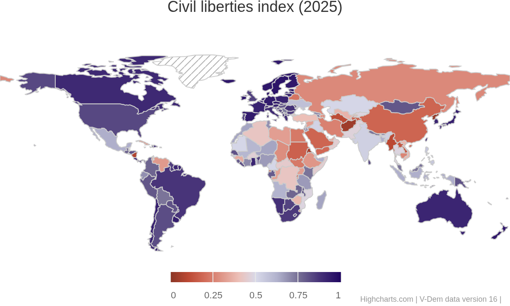

IV. What is the Future of Transnational Politics and IR?
Justin Leinaweaver (Spring 2026)
Claim a democracy and a dictatorship (first-come, first-served) and review their current human rights record using:
Submit a summary of each country to Canvas before class (2-3 sentences each)
“A case study is an in-depth examination, often undertaken over time, of a single case – such as a policy, programme, intervention site, implementation process or participant” (Goodrick 2014, 1).
“Comparative case studies involve the analysis and synthesis of the similarities, differences and patterns across two or more cases that share a common focus or goal in a way that produces knowledge that is easier to generalize about causal questions – how and why particular programmes or policies work or fail to work” (Goodrick 2014).
In general, how good is the respect for human rights in these cases?
Excellent
Good
Fair
Poor
Apply the tool: In general, how good is the respect for human rights in these cases?
Most targeted groups?
Most violated rights?
Apply the tool: In general, how good is the respect for human rights in these cases?
Most targeted groups?
Most violated rights?
Varieties of Democracy (V-Dem) Civil Liberties Index

Krain (2012) p574-578
Before class submit to our Canvas discussion board: